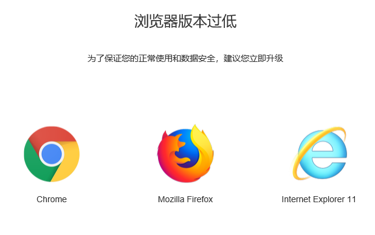

占位符
1.默认尺寸
<i class="gd-none-data"></i> <i class="gd-none-search"></i> <i class="gd-select-user"></i> <i class="gd-select-file"></i>
2.小尺寸
<i class="gd-none-data-xs"></i> <i class="gd-none-search-xs"></i> <i class="gd-select-user-xs"></i> <i class="gd-select-file-xs"></i>
标记
0
1
2
3
4
<span class="gd-mark">0</span> <span class="gd-mark gd-mark-success">1</span> <span class="gd-mark gd-mark-error">2</span> <span class="gd-mark gd-mark-danger">3</span> <span class="gd-mark gd-mark-warning">4</span>
IE低版本检测
在gdui.css之后，所有js之前引入gd_iecheck.js,在用户使用IE9及以下版本访问时，将给出以下提示：
